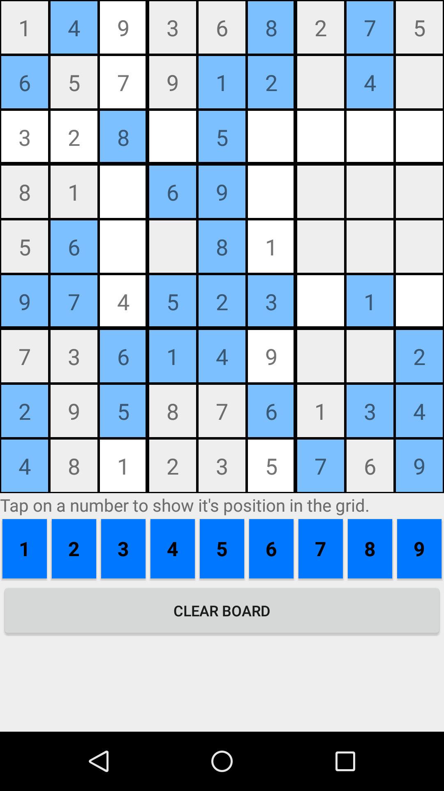
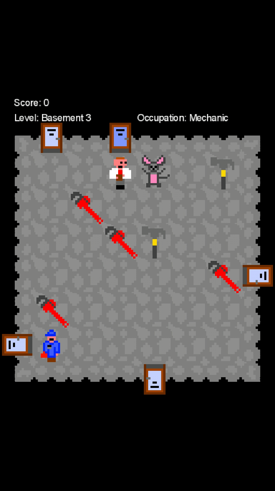
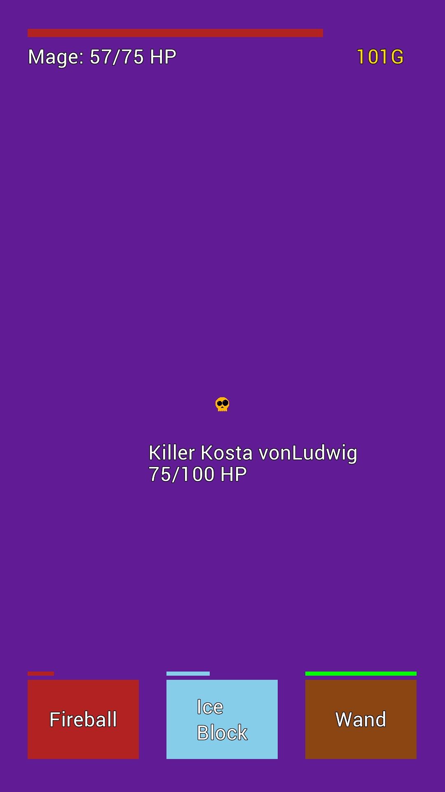
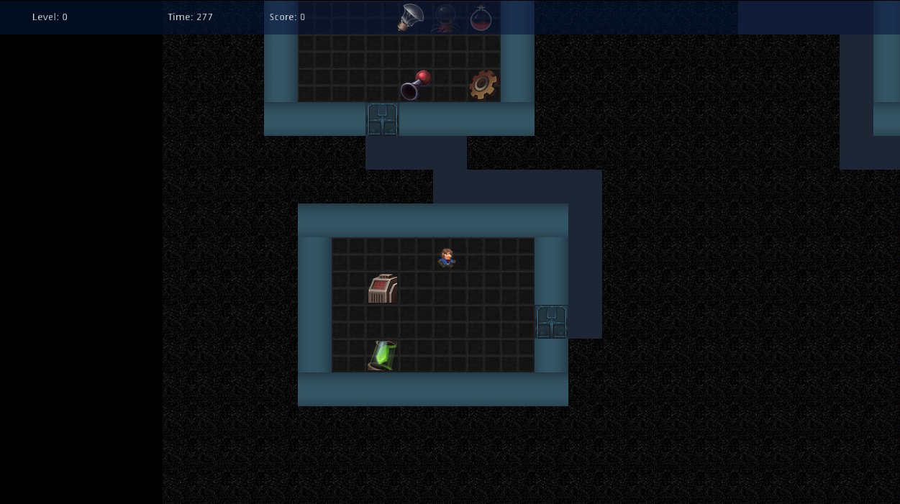

Like a lot of other developers, and even regular folks, I enjoy video games. If you had a nickel for every time you heard or read that somewhere, you’d probably be too rich to be reading this blog; instead enjoying your private island complete with whatever else rich people buy.
I’ll save you the rest of the cliched prose that usually follows that line and just say that I also enjoy learning about the process of, and actually, making games.
After helping a friend make a game in about a week (and realizing I don’t totally suck at it), I decided to collate and revisit my past game projects.
I’ve learned that they don’t completely suck. some do though…
My Game Development History
According to the timestamps in the repositories, it looks something like this:
Counterfeit Colours (Jan 21, 2017 - Mar 14, 2017)
A “game” based on the Stroop Effect where you have to tap on the correct colour name. If you see an orange box, you have to tap on the word “orange”, not the word that is coloured orange. Confused? Check the screenshot below, it might clear it up.
I use the term game loosely as it’s not programmed with any game engine or library, just straight up vanilla Android with the SDK. It being my first foray in Android development, I learned a lot about Android including how it uses xml for layouts and got to exercise my Java chops again.
I enjoyed making it and people enjoyed playing it (all 12 of them; mostly coworkers); what more do you want?

Shudoku (Feb 13, 2017 - Mar 1, 2017)
Unfinished Sudoku game. The difference was supposed to be that instead of numbers, it would use shapes that could be changed based on themes that were unlockable. Ambition galore but never got that far.
Another “game” that was made with vanilla Android; spent way too long implementing an interactive grid with the GridView widget.
Learned about persisting data in Android after the session ends and loading it again when it starts.
The name is supposed to be a portmanteau of shape and sudoku. Ground-breaking.

HTML games (July 28, 2017 - Aug 7, 2017)
Again, no libraries or engines were used here, just HTML5 and Javascript. I’d refer to these as games now since they follow the typical structure with an explicit game loop and graphics drawn frame by frame.
Click on the titles to play in your browser; not playable on mobile since they use the keyboard as input (but they still load). Most move with the arrow keys unless otherwise specified.
Two player pong clone
Pong clone, pretty self-explanatory but two people can play at the same time (one using the arrow keys and the other using a and d). Learned about the game loop, drawing with the HTML5 canvas element, keyboard input in JS, and simple collision detection.
Platformer
Platforming game with platforms that move horizontally; objective is to reach the top right of the screen and enter the yellow square. Learned about adding gravity to bodies and applying velocity to move them.
Tile Battler
Kind of like Pac-man in the sense that you collect dots while avoiding an enemy that follows you. Learned how to make very simple AI that seeks out the player, tile based game world and movement, and adding pause functionality to halt and restart the game loop.
Debuggers
Contra-type run-and-gun sidescroller that I was very ambitious about; had a whole story and character development done. In the current state you can move and shoot (s key) one enemy that moves back and forth indefinitely (pretty close to being done). Learned about handling multiple key presses simultaneously and object management (creation/deletion) from within an array (bullets and enemies).
Adventure Crawler
Dungeon crawler game of sorts with a fixed grid. The idea was to have enemies that only moved when you did and you progress to the next level via a ladder/stairs. Again, lots of ambition (it’s a running joke at this point): RPG elements like leveling and tiered items were planned, but next to nothing was implemented before moving on.
Promotion (Oct 30, 2017 - Jan 29, 2018)
My first proper game (based on my definition) since it was built with a game library, LibGDX, and featured graphics created by me that weren’t just coloured shapes. I came up with a story around the player working their way through different jobs (mechanic, janitor, mail clerk, secretary, held desk associate, programmer, etc.) in an organization to eventually becoming the CEO.
Each floor (read: level) would be tailored to the profession they would play as (e.g. mechanic) and feature specific items, goals, and enemies. They would collect items (wrenches and hammers), interact with things (broken boiler), and avoid enemies (rats). When they achieve the level’s goal, they would report to their manager and receive a promotion to the next job and level. Truly a winning story.
It featured a level map with different rooms connected by doors, randomly spawning items and enemies, a manager that blocked the door to the next level, (very simple) animated sprites, and the system around enemy movement that I wanted to implement in Adventure Crawler above.
I learned more about game development and took joy in not having to implement lower level things like player input while reaping the benefits of constructs in the engine like tilemaps.

Fighters of Fate (Jan 30, 2018 - Apr 13, 2018)
Another game built with LibGDX, this one was meant to be a rogue-like where the player plays as one of three classes with unique abilities.
The story features the player visiting a fortune teller that reads their fortune by showing them cards. Each card is something the character interacts with in the game like an enemy, item, or rest house. When the player defeats or finishes with the “card”, the fortune teller deals a new card for them to deal with.
It was meant to be a one-handed mobile game with the abilities all accessible at the bottom of the screen. The abilities are on unique timers so they can’t all be spammed indefinitely; the player needs to wait for the ability to “cooldown”. Each class has a normal attack (quick cooldown), and two class specific ones (usually a high damage attack and a heal/shield ability). Killing enemies yields coins that persist play sessions and would have been used to unlock…something(?).
I remember implementing the cooldown timers was a particularly interesting affair.

Snekka (Oct 20, 2018 - Nov 24, 2018)
This one holds many firsts for me:
- First completely finished game (included all planned features)
- First published game (on the Google Play store)
- First game with sound effects and music (both royalty-free)
As a snake clone it didn’t need a story but I came up with a dumb one anyway: Snekka needs to eat apples to produce her babies (they end up following her in their eggs) but if she runs into one of them, she’ll eat them instead and cause the rest to roll away in fear! I mentioned it was dumb, right?
It was also made with LibGDX and included a few cool features:
- Independently toggle-able sound effects and music
- Current session and all-time high scores
- Mobile controls (swipe to move and tap to pause)
- Bad apple pick-ups that spawn a few squares ahead of Snekka and cause impairments: they either increase movement speed, reverse input direction (swiping left moves right, up becomes down, etc.), or both
- Point based difficulty modifiers (apply impairments above when a certain score is reached)
I learned a lot about the Android app packaging and Play Store publishing processes. Also got really good at the game from the hours of iterating and testing.
Fun fact: the name Snekka comes from an enemy (Snecko) in the game Slay the Spire, which I was playing a lot of at the time.

Space Hack (Apr 23, 2020 - Apr 29, 2020)
This is the game I mentioned in the beginning of the post, the one I helped make in about a week. It was created as part of a conference talk my friend was putting together for Deserted Island DevOps. When I learned that she was building a game with the Godot engine, I immediately offered to help her out, having recently started seriously tinkering and developing with it myself. She has a post about it here with a link to where you can watch the whole talk.
In terms of features, I think we got the majority of what was planned into the actual game with the big exception being multiplayer and networking. I also remember squashing a lot of odd bugs in the process. Some things I especially remember implementing were:
- Fixing an issue where items would spawn outside of the accessible area
- Dynamically loading all item sprites from a resource directory into game objects
- Key items functionality: two random items each level are chosen and must be obtained before the player can progress to the next level; all other items are bad and, if collected, may lead to a game over
- A lightbulb item that, when obtained, shows the level without the default vision impairment
- Fixing so many issues around HUD sprites and their placement
This was the first project I worked on where I wasn’t the only developer so I learned a lot about collaborating using Github; doing all the things I learned about doing (but never had to do as the sole developer) like using features branches, pull requests, and raising issues for bugs. I also got some good practice into reading other people’s code and understanding what was going on in it (without them having to explain it to me); an extremely valuable skill.

Next Up
Diner Drop (Nov 4, 2019 - Nov 25, 2019 - [HIATUS] - April 15, 2020 - ???)
The next game I’m working on (also being built in Godot) is called Diner Drop: a 2D game where you need to catch falling food in the right order and then serve it to customers. I got the idea from playing Cook, Serve, Delicious!.
Not much in terms of story really; you play as a chef who has to catch falling food. Who’s throwing it and why? Not too sure right now. Maybe the kitchen manager to make space in the walk-in for new product?
The idea is customers show up to the restaurant and demand a specific order: a burger, pizza, ice cream, etc. that shows above their head. If they don’t get it in time or the player serves them too many incorrect orders, they leave angry. Anger too many customers and you lose.
You must catch the order in the right…uh, order (e.g. the burger order: bottom burger part, middle burger part, top burger part) and then serve it to the correct customer. The falling food is randomized based on what orders the current customers have so players must avoid the wrong foods while assembling the right orders. Bad orders can always be thrown out in the compost bin on the side of the screen.
You can follow all of the game’s updates with this link.

Wrap Up
I never felt like a real programmer or developer except for when I was developing a game. Not sure if it’s because game dev is inherently iterative so you can see the fruits of your labour sooner or because I always saw it as a fairly difficult process but it has helped me get over my imposter syndrome which, in the end, is all that really matters as no one really knows what they’re doing.